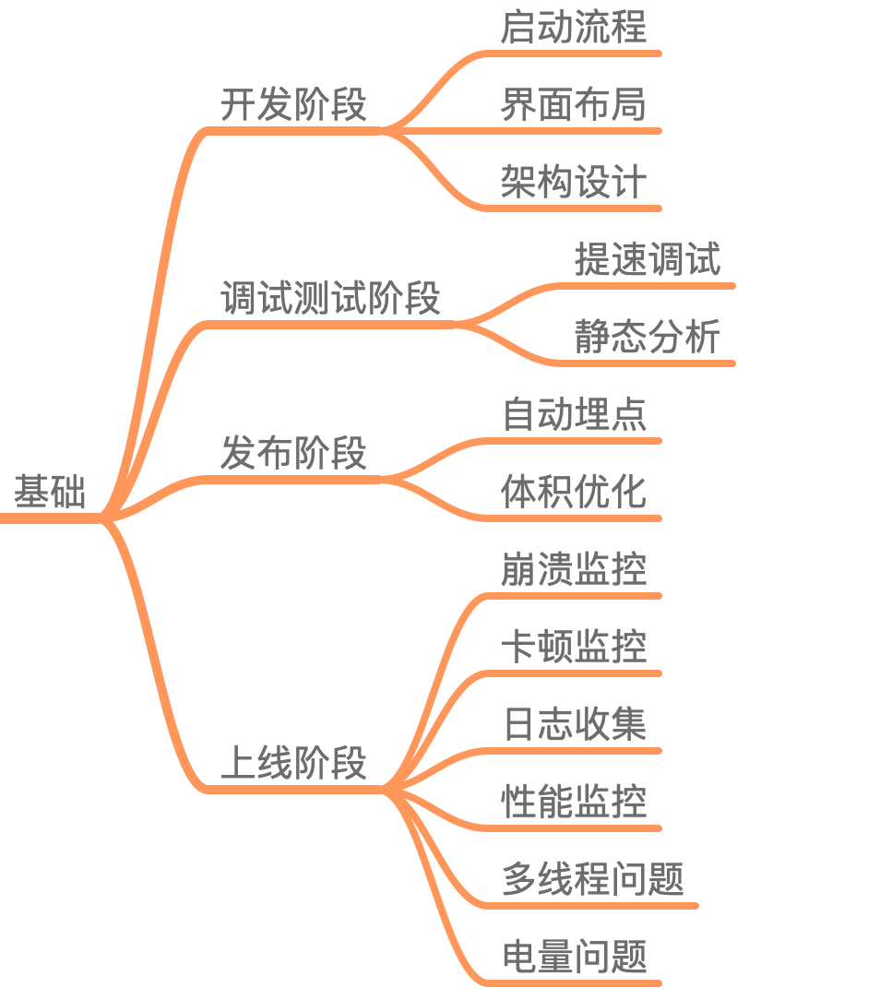
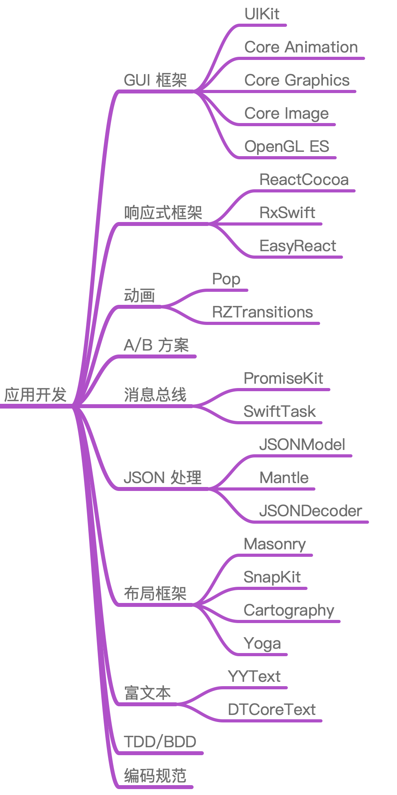
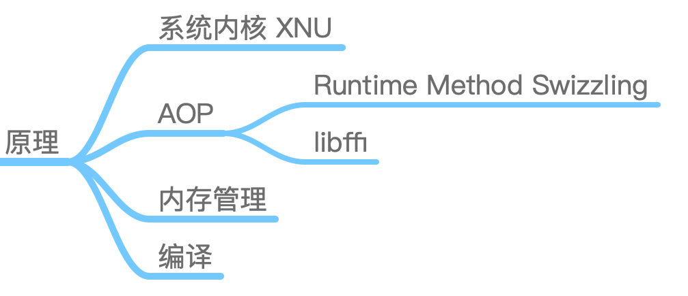
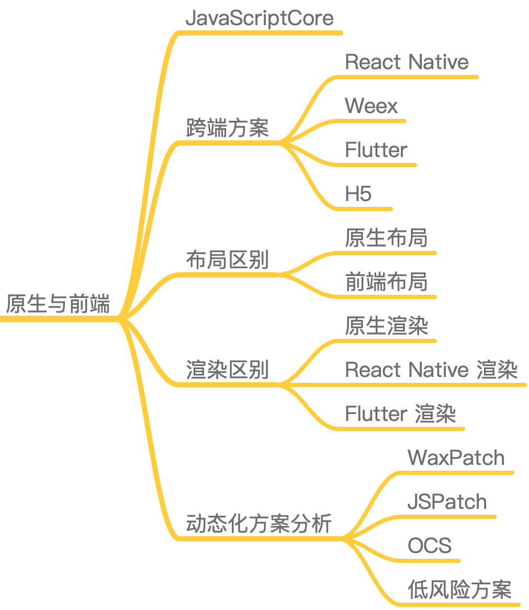
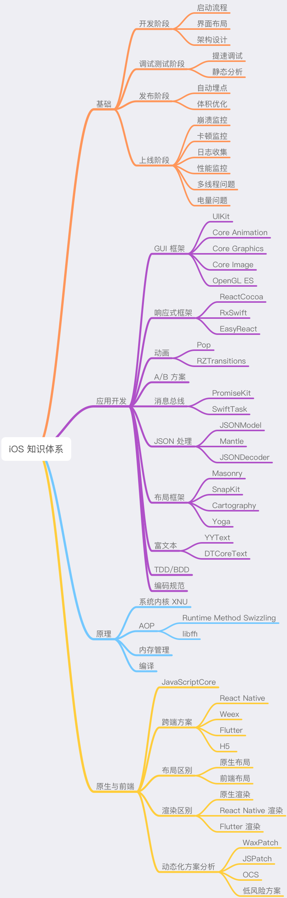

- 00 开篇词 锚定一个点，然后在这个点上深耕.md.html
- 01 建立你自己的iOS开发知识体系.md.html
- 02 App 启动速度怎么做优化与监控？.md.html
- 03 Auto Layout 是怎么进行自动布局的，性能如何？.md.html
- 04 项目大了人员多了，架构怎么设计更合理？.md.html
- 05 链接器：符号是怎么绑定到地址上的？.md.html
- 06 App 如何通过注入动态库的方式实现极速编译调试？.md.html
- 07 Clang、Infer 和 OCLint ，我们应该使用谁来做静态分析？.md.html
- 08 如何利用 Clang 为 App 提质？.md.html
- 09 无侵入的埋点方案如何实现？.md.html
- 10 包大小：如何从资源和代码层面实现全方位瘦身？.md.html
- 11 热点问题答疑（一）：基础模块问题答疑.md.html
- 12 iOS 崩溃千奇百怪，如何全面监控？.md.html
- 13 如何利用 RunLoop 原理去监控卡顿？.md.html
- 14 临近 OOM，如何获取详细内存分配信息，分析内存问题？.md.html
- 15 日志监控：怎样获取 App 中的全量日志？.md.html
- 16 性能监控：衡量 App 质量的那把尺.md.html
- 17 远超你想象的多线程的那些坑.md.html
- 18 怎么减少 App 电量消耗？.md.html
- 19 热点问题答疑（二）：基础模块问题答疑.md.html
- 20 iOS开发的最佳学习路径是什么？.md.html
- 21 除了 Cocoa，iOS还可以用哪些 GUI 框架开发？.md.html
- 22 细说 iOS 响应式框架变迁，哪些思想可以为我所用？.md.html
- 23 如何构造酷炫的物理效果和过场动画效果？.md.html
- 24 A_B 测试：验证决策效果的利器.md.html
- 25 怎样构建底层的发布和订阅事件总线？.md.html
- 26 如何提高 JSON 解析的性能？.md.html
- 27 如何用 Flexbox 思路开发？跟自动布局比，Flexbox 好在哪？.md.html
- 28 怎么应对各种富文本表现需求？.md.html
- 29 如何在 iOS 中进行面向测试驱动开发和面向行为驱动开发？.md.html
- 30 如何制定一套适合自己团队的 iOS 编码规范？.md.html
- 31 iOS 开发学习资料和书单推荐.md.html
- 32 热点问题答疑（三）.md.html
- 33 iOS 系统内核 XNU：App 如何加载？.md.html
- 34 iOS 黑魔法 Runtime Method Swizzling 背后的原理.md.html
- 35 libffi：动态调用和定义 C 函数.md.html
- 36 iOS 是怎么管理内存的？.md.html
- 37 如何编写 Clang 插件？.md.html
- 38 热点问题答疑（四）.md.html
- 39 打通前端与原生的桥梁：JavaScriptCore 能干哪些事情？.md.html
- 40 React Native、Flutter 等，这些跨端方案怎么选？.md.html
- 41 原生布局转到前端布局，开发思路有哪些转变？.md.html
- 42 iOS原生、大前端和Flutter分别是怎么渲染的？.md.html
- 43 剖析使 App 具有动态化和热更新能力的方案.md.html
- 用户故事 我是如何学习这个专栏的？.md.html
- 结束语 慢几步，深几度.md.html
- 捐赠
01 建立你自己的iOS开发知识体系
你好，我是戴铭。
这是我们专栏的第一篇文章。所谓知己知彼，今天我们先来聊聊iOS开发需要掌握哪些知识，以及如何把这些知识融会贯通，进而形成一套成熟的知识体系。
我们现在所处的互联网时代，学习资料真的是非常完备。比如，GitHub上各领域的 Awesome 系列，就是专门用来搜集各类资料的，其中 iOS 的 Awesome 里面，就涉及了 iOS 开发的各个方面。
但知识掌握的牢固、精细程度，是根据学习资料收集的多少来衡量的吗？当然不是了。
相比于以前的资料匮乏，现在的情况往往是大多数人手里资料一大堆，但真正消化吸收的却是少之又少，用到相关知识时总有种“书到用时方恨少”的无奈。毕竟，人的精力是有限的，根本无法完全掌握这些被轻松收集来的资料。
再看看我们身边那些“厉害”角色，他们并不是样样精通，而是有擅长的领域。从我接触的这些“大神”们的成长经历来看，都是先深挖某一领域，经过大量的学习和实践后理解了编程的本质，从而可以灵活调配和运用自己已经积累的知识。在这之后，他们再探索其他领域时，就做到了既快又深，成了我们眼中的“大神”。
所以，学习iOS开发这件事儿，不要一开始就求多，而要求精、求深。因为，条条大路通罗马，计算机的细分领域虽然多，但学到底层都是一样的。
就比如说，很多iOS开发者，刚学会通过网络请求个数据、摆摆界面弄出 App 后，看到人工智能火了就去学一下，区块链火了又去学一下，前端火了又开始蠢蠢欲动。但结果呢？每一门技术都学不深不说，学起来还都非常费劲。
因此，我的建议是不要被新技术牵着鼻子走，而是努力提升自己的内功，这样才能得心应手地应对层出不穷的各种新技术。
接下来再回到专栏上，我希望这个专栏能够结合自己的成长经历，与你分享核心且重要的iOS开发知识。这些知识，不仅有助于你平时的开发工作，能够提高你开发 App 的质量和效率，还能够引导你将各类知识贯穿起来，进而形成一套自己的核心且有深度的知识体系。
形成了这套知识体系后，当你再学习新知识时，就会更加快速和容易，达到所谓的融会贯通。
举个例子，iOS 动态化和静态分析技术里有大量与编译相关的知识。编译作为计算机学科的基础知识，除了 iOS开发，在跨端技术 Weex、React Native，甚至前端领域（比如Babel）都被广泛使用。
但是，这些知识的学习也要有所取舍，毕竟精力有限，而且我们也确实需要一些“立竿见影”的效果来激励自己。那么，我们应该先学习哪些知识，才能快速提高日后学习和工作的效率呢？接下来，我就和你分享一下我脑海中的iOS知识体系，帮你梳理出要重点掌握的核心知识脉络。
iOS的知识体系，包括了基础、原理、应用开发、原生与前端四大模块。我认为好的知识体系首先需要能起到指导 iOS 应用的开发和发现并解决开发问题的作用。所以，这四大模块的设置初衷是：
- 基础模块的作用，就是让你具有基本的发现并解决开发问题的能力；
- 应用开发模块，就是用来指导应用开发的；
- 好的知识体系还要能够应对未来变革，也就是需要打好底子掌握原理、理清规律，看清方向。所以，原理模块的作用就是帮你掌握原理和理清规律，而原生与前端模块会助你看清方向。
接下来，我就为你一一细说这四个模块。
基础模块
我把iOS开发者需要掌握的整个基础知识，按照App的开发流程（开发、调试测试、发布、上线）进行了划分，如下图所示。
- 我们在开发阶段需要掌握的基础知识，主要包括：启动流程、页面布局和架构设计。
- 启动的快慢，可谓App的门面，同时关乎日常的使用体验，其重要性不言而喻。而只有了解了App的启动流程，才能合理安排启动阶段对功能初始化的节奏，将启动速度优化到极致。在专栏的基础篇，我会和你一起剖析App启动时都做了哪些事儿，让你可以掌控App的启动。
- 界面是开发App的必经之路，是一定绕不开的，如何提高界面开发的质量和效率，一直是各大团队研究的重要课题。那么，我在专栏中和你介绍、分析的目前界面开发的趋势，就可以帮你夯实界面这块内容的基础。
- 架构怎么设计才是合理的，也是这个阶段需要探索的一个重要课题。毕竟每个团队的情况不一样，什么样的架构能够适应团队的长期发展，就是我在这个专栏里要和你好好说道说道的。
在调试测试阶段，我们需要掌握的主要就是提速调试和静态分析的内容。
- iOS 开发的代码都是需要编译的。那么，程序体量大了后，编译调试过程必然会变长。而有啥法子能够将这个过程的速度提高到极限，就是我要在这个专栏里面和你分享的了。
- 对 App 质量的检查，分为人工检查和自动检查。而质量检查的自动化肯定是趋势，所以自动化静态分析代码也是这个专栏会讲的。
在发布阶段，我们需要做些和业务需求开发无关、涉及基础建设的事情。这部分工作中，最主要的就是无侵入埋点和包大小优化。
- iOS 安装包过大会导致4G 环境下无法下载的情况，所以对包大小的控制已经成为各大公司最头疼的事情之一。希望我在包大小瘦身上的经验能够帮到你。
- 发布前需要加上各种埋点，这样才能让你充分地掌握 App 运行状态是否健康，同时埋点也是分析上线后遇到的各种问题的重要手段。但是，如果埋点的代码写的到处都是，修改和维护时就会举步维艰。所以我在这个专栏里，也会和你分享一些好的将埋点和业务代码解耦的无侵入埋点方案。
在上线阶段，开发质量的高低会影响上线后问题的数量和严重程度，比如有崩溃和卡顿这样导致 App 不可用的问题，也有性能和电量这样影响用户体验的问题。对于这些问题你一定不会袖手旁观，那怎么才能监控到这些问题呢？怎样才能够更准确、更全面地发现问题，同时能够收集到更多有助于分析问题的有效信息呢？
在这个专栏中，我会从崩溃、卡顿、内存、日志、性能、线程、电量等方面和你一一细说。
应用开发
应用开发部分，我们需要关注的就是一些经典库，因为这些经典库往往出自技术大拿之手，代码结构和设计思想都非常优秀，同时经过了大规模的实践，不断打磨完善，具有很高的质量保障。比如：动画库 Pop，响应式框架 RAC、RxSwift，JSON 处理库 JSONModel、Mantle等。
- 在专栏里，我会和你好好介绍下布局框架新贵 Cartography 和富文本霸王 YYText 、DTCoreText ，分享我的使用经验，让你也能够快速上手并应用到你的 App 中。
应用开发中和视觉表现相关的 GUI 框架、动画、布局框架、富文本等部分知识掌握好了，直接能够让用户感知到你 App 的优秀表现。响应式框架、TDD/BDD、编码规范等知识能够让你的开发更规范化、更有效率。我会从实践应用和实现原理的方面，带你全方位地去了解如何更好地进行应用开发。
有道是选择大于努力，可能你使用一个不恰当的库所做的大量努力，也不及别人用对了一个好的库轻轻松松、高质量完成的任务。
原理模块
说到iOS开发原理，主要就是系统内核XNU、AOP、内存管理和编译的知识。这些知识具有很强的通用性，其他任何语言、系统和领域都会涉及到。
- 在接下来的专栏里，我会为你剖析这些知识，希望能够帮助你更好地理解它们的原理。掌握这些通用知识，可以提升你的内功，助你打通任督二脉；深挖知识，可以帮你理清楚开发知识的规律，达到融会贯通的效果；掌握通用知识，也能够让你对未来技术见招拆招。所以，你花在这部分知识上时间，绝对是超值的。
原生与前端
随着 Flutter 和 React Native 越来越完善，关注的人也越来越多。原生还是前端，才是移动应用的未来，谁都没法说得清楚。有句话怎么说来着，无法选择时就都选择。
在原生与前端这个部分，我会着重和你分析隐藏在这些时髦技术背后的解释器和渲染技术，也正是这些技术的演进造就了目前跨端方案的繁荣。
- 值得一说的是，从 H5 到 Flutter，渲染底层图形库都使用的是 Skia。也就是说，这么多年来渲染底层技术就基本没有变过。而且，向Flutter 的演进也只是去掉了 H5 对低版本标准的支持。但，仅仅是去掉这些兼容代码，就使性能提升了数倍。
所以说，对于新的技术如何去看，很重要，先不要急着深入到开发细节中了，那样你会迷失在技术海洋中。你需要先建立好自己的知识体系，打好基础，努力提升自己的内功，然后找好指明灯，这样才能追着目标航行。
最后，我来把整个专栏中涉及到的基础、原理、应用开发和原生与前端的知识，梳理到一起，就形成了如下图所示的iOS知识体系。

小结
今天我跟你说了 iOS 开发中哪些知识是需要着重学习的，以及怎样将这些知识体系化。在学习知识的道路上，我的建议是求精、求深，基础打牢，以不变应万变。在工作上，则要注重开发效率，避免不必要地重复造轮子，理解原理和细节，同时开阔眼界，紧跟技术前沿。
说到底，不要急着看到啥就去学啥，有目的、有体系地去学习，效果才会更好。即使工作再忙，你也要找时间成体系地提升自己的内功，完善自己，然后反哺到工作上，让工作效率和质量达到质的提升，进而从容应对技术的更新迭代。
按照知识体系高效学习是很棒的，会让你成长得很快。不过，有时找个咖啡小店，随便拿起一本书翻翻，或者随便挑几篇平时收集的文章读读，再拿出小本子记记笔记，也不失为一种很佛系的学习方式，毕竟生活中总是需要点儿惊喜不是吗。
感谢你的收听，欢迎你在评论区给我留言分享你的观点，也欢迎把它分享给更多的朋友一起阅读。
© 2019 - 2023 Liangliang Lee. Powered by gin and hexo-theme-book.